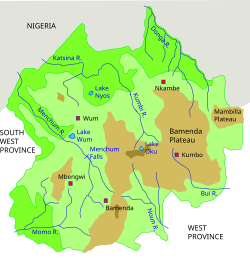

Welcome To The north West Region Of Cameroon
North-West Region is a region with special status in Cameroon. Its capital is Bamenda. The Northwest Region was part of the Southern Cameroons, found in the western highlands of Cameroon. It is bordered to the southwest by the Southwest Region, to the south by the West Region, to the east by the Adamawa Region, and to the north by Nigeria.
The North West Region is one of Cameroon’s ten regions, located in the western highlands of the country. It is home to over 2 million people and is known for its mountainous landscape, rich cultural traditions, and cool climate. The capital city is Bamenda, a bustling town with a blend of modern life and traditional values.
The region is predominantly English-speaking and is a hub of education, agriculture, and traditional governance. It is a proud center of the Grassfields culture and home to many different ethnic groups, including the Tikar, Bafut, and Kom people.
History
The origins of the region are linked to the settlement of the Tikar people who joined the Bamoun Kingdom, in the 1700s.[8] In 1884, the region was colonized by Germany under the regime of the protectorate until 1916 when it became a condominium administered jointly by the United Kingdom and the France.[9] In 1919, the administration of the North West region, as part of Southern Cameroons became solely British. In 1961, the region joined Cameroon as part of the federated state of West Cameroon, under the 1961 British Cameroons referendum.
Administration
The Northwest Region (known before 2008 as the Northwest Province) is the third most populated province in Cameroon. It has one major metropolitan city, Bamenda, with several other smaller towns such as Wum, Kumbo, Mbengwi, Ndop, Nkambé, Batibo, Bambui, Bafut and Oshie. The province saw an increase in its population from approximately 1.2 million in 1987 to 1.8 million in 2010.[11] The population density of 99.12 people per square kilometer is higher than the national average of 22.6. The provincial urban growth rate is 7.95%, higher than the national average of 5.6%, while the rural growth rate, at 1.16%, is equal to the national rate. In 2001, according to the Statistical Provincial Services of the North-West Province, the population of the province is young, with over 62% of its residents being less than 20 years old.